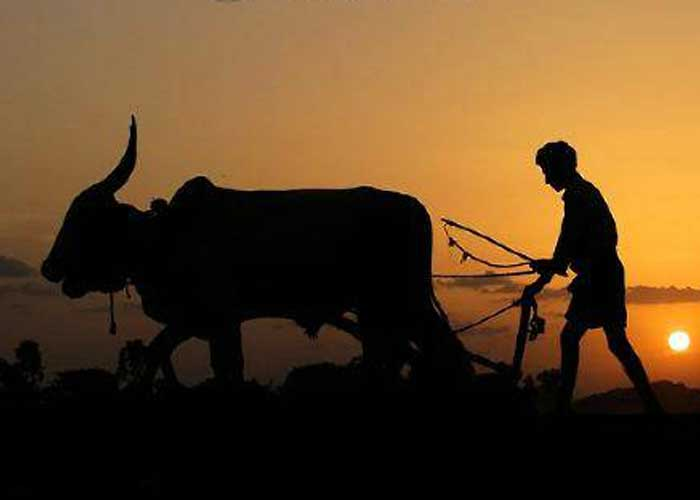
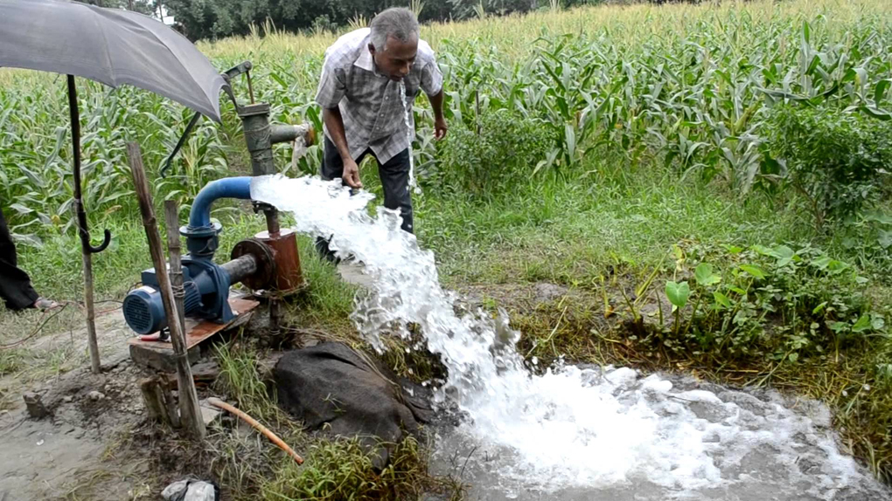
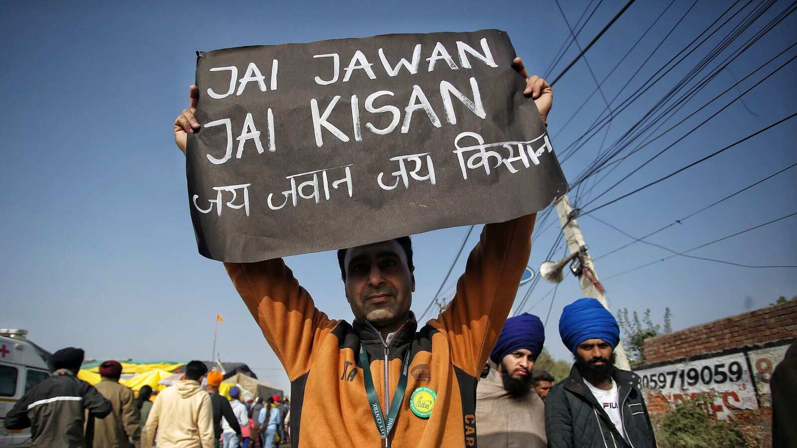

PREVENTION
As the saying says PREVENTION IS BETTER THAN CURE. Prevention of suicides is better than giving compensation after their death.Concerns about farmer suicide are not new, and studies on the subject have suggested different explanations for the act. One school of thought has suggested the primacy of an impaired mental health state, implying that the psychosocial needs of farmers have been neglected, and that caring community professionals need to address farmer distress.This school of thought additionally envisages a role for early psychiatric intervention as a primary preventive measure. In this connection, reports on the lack of psychiatrists offering to help have been of concern.
However, there is evidence from studies in Karnataka, Kerala, Tamil Nadu, and other states in India that the role of socioeconomic stress in farmer suicide may be greater than the role of mental disorders. Studies have not discovered conclusive evidence of psychiatric morbidity behind farmer suicides; rather these studies and other statistical data point toward severe socioeconomic adversity as the primary trigger. The NCRB 2014 data also support this conclusion as they indicate that almost 75% of the 5650 suicides that were recorded during 2014 were by small and marginal farmers holding up to two hectares of land; these sections of farmers are exposed to severe socioeconomic hardship. The same NCRB report attributed reasons such as bankruptcy, indebtedness, crop failure, and other farming-related issues to more than 60% of the suicide cases. It is therefore necessary to further investigate these adverse socioeconomic conditions and address the root cause of the suicide risk with the best pragmatic remedies.
SOLUTIONS TO THE PROBLEM:
With a 17% share in the national gross domestic product and with 22% of the total population (according to the 2011 census) engaged in farming, the overall health of the agriculture sector is vitally important. In this context and from a humanitarian point of view, the tragedy of farmer suicide demands prompt attention. Different governments across time have brought out different short-term solutions that do not address the root causes of the problem and that, therefore, do not reduce suicide risks. Such solutions come in the form of populist “special packages” that are reactionary rather than in the form of preemptive long-term policy. In addition, solutions such as subsidies, loan waivers, crop insurance, and other welfare schemes have failed due to improper implementation. Worse still, knee-jerk reactions such as compensation after suicide have sometimes provided an incentive for suicide.
What is the solution? As a starter, farmers need to be protected from falling into the trap of the spiraling debt, which is the primary risk factor for suicide. For this, farming must be protected from failure and made profitable. Possible policy efforts are listed below; these are not in any specific order, and priorities would depend on circumstances.
- Small and marginal farmers should be encouraged to pool their farmland to leverage the advantages associated with larger land holdings, such as the use of modern and mechanized farming techniques
- Water supply for irrigation must be insulated from the vagaries of nature by better water management systems; attention must particularly be paid to rainwater harvesting and resolution of interstate river water sharing disputes
- Farmers must necessarily be educated about modern farming techniques and practices
- Younger professionals must be encouraged to participate in farming activities
- Farm loans at soft interest rates need to be made available, and loan recovery procedures need to respect human rights; farmers should be discouraged from dealing with private money lenders
- Fair price for farm products must be ensured, and middlemen eliminated by creating a direct reach for the farmers to the market
- The government-administered MSP should take into consideration the existing realities to cover the cost of production and to insulate farmers from fluctuating market conditions
- Training needs to be provided for secondary rural investments in dairy farming, poultry farming, animal husbandry, and other activities, with a clearly viable chain apparent from financing to marketing
- Financially wasteful expenditure arising from unnecessary and even harmful social practices must be discouraged; this includes matters ranging from alcohol use to dowry gifts and large wedding spending. Savings should be encouraged, and saving instruments should be devised for the farming population
- Storage and food processing units need to be established in rural areas
- Comprehensive but affordable insurance schemes should be made available, covering farmers and crops from problems at every stage of the crop cycle. There should be a quick, simple, and corruption-free approach to crop damage assessment with disbursement of relief directly into the claimant's bank account
- The recently announced Pradhan Mantri Farmer Bima Yojana, an improved version of existing schemes such as the National Agricultural Insurance Scheme and the Modified National Agricultural Insurance Scheme, is a step in the right direction although some voices have been raised against it. Organizations such as the Alliance for Sustainable and Holistic Agriculture call it another missed opportunity, citing drawbacks such as noninclusion of tenant farmers, limited coverage, noninclusion of crop damage by wild animals, improper damage assessment methods, and lack of clarity regarding where the claim amount will be deposited (to the farmer's savings account or to the loan account).
The income earned from crops depends on the prevailing market situation, the greed of middlemen, the logistics of selling the produce, and other factors. Often, the government-administered minimum support price (MSP) may not even cover the cost of production. Consider, for example, the case of sugarcane production; the MSP is only INR 1000-1100 per unit against a production cost of INR 900-1000. On the surface, it appears that the farmer will make a (small) profit. However, most of the small and marginal farmers have to take expensive loans, primarily from private lenders, to fund their farming process; interest rates can range from 30% to 60%, in many instances. Thus, the MSP is inadequate when loan servicing is brought into the equation, and the situation worsens in the context of crop failure for whatever reason.
Farmers are then caught in debt traps. They need money to service their loans, fund the next agricultural season, and support their family. Hence, they take fresh loans. The debt cycle escalates. Loan recovery processes may be initiated, and these are often unethically aggressive in nature, even bordering on the criminal.
Conclusion:
There is a paucity of studies on psychological autopsy in farmer suicide,although much has been written on the subject. In the absence of such studies, it is pointless to speculate about mental health issues that may drive farmer suicide. There is a certain folly in suggesting a mental health professional's role; can such a professional go from farm to farm each season that crops fail to offer antidepressants and psychotherapy to farmers whose families face financial ruin? This is not to say that such secondary and tertiary prevention interventions are useless; rather, it is more important to address the root cause of the problem as a step toward primary prevention. Attention should be focused on the development of an all-encompassing relief scheme after consulting farmers and farmer movements, and after considering the recommendations of government committees such as the PK Mishra Committee and others. JAI JAWAN JAI KISAN